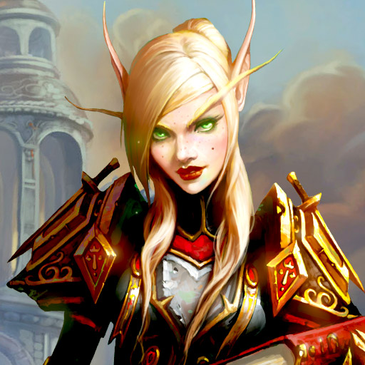

La Horda
La Horda es una de las facciones políticas del mundo mortal de Azeroth, que sirve de contrapunto a la Alianza, a quienes
siempre han mostrado hostilidad debido a sus diferentes puntos de vista y su segregación racial.
La Horda actualmente está comandada por Sylvanas Windrunner que recibió el cargo de Vol'jin antes de su muerte siendo
el jefe de guerra despues de liberar a la horda de la tiranía de Garrosh Grito Infernal, que heredó el cargo de su
líder y mentor Thrall, pues este dejó su puesto para ayudar al Anillo de la Tierra a frenar el daño causado por Alamuerte
en la expansión Cataclysm.,Thrall, a su vez recibió el mando de manos de Orgrim Doomhammer. Sin embargo la posición
ideológica de la organización ha variado mucho con el paso del tiempo. Fue fundada en Draenor por Ner'zhul y entre
sus filas solo había orcos malditos por el ansia de sangre, goblins y ogros. Con el paso del tiempo, se han ido uniendo
nuevas razas, cada una con una motivación distinta, como los tauren, los trolls de la tribu Darkspear, los elfos
de sangre o los Forsaken. Tienen un deseo común, ya sea por extensión o por sus ideas: la supremacía de la Horda.
La Horda tiene dos particulares reglas: están prohibidos el canibalismo desde la llegada de los Lanza Negra y el
esclavismo a causa de lo que pasaron los orcos en los campos de concentración.
Los Orcos

Feroces conquistadores
A diferencia de las demás razas de la Horda, los orcos no son nativos de Azeroth. En sus orígenes, vivían como clanes chamánicos en el exuberante mundo de Draenor. Dejaron a un lado su pacífica cultura cuando Kil'jaeden, un señor demoníaco de la Legión Ardiente, los corrompió y los usó para vengarse de los draenei, exiliados del mundo natal de Kil'jaeden.
Historia de los orcos:
El plan de Kil'jaeden funcionó. Los orcos bebieron la sangre de Mannoroth, un importante general de la Legión Ardiente, la cual los imbuyó de poder y los esclavizó a la Legión. La exposición a energías viles tornó el color marrón natural de su piel en un verde pálido. Bajo la influencia del demonio, los orcos casi exterminaron a los draenei, pero Kil'jaeden fue más allá... Con los orcos a su disposición, la Legión Ardiente planeaba invadir Azeroth una vez más. Para ello, el corrupto archimago humano Medivh fraguó una conspiración con el orco brujo Gul'dan para construir el Portal Oscuro, una enorme estructura que permitiría a los orcos entrar en Azeroth. Al llegar a Azeroth, las imparables tropas orcas de la Horda arrasaron el reino humano de Ventormenta. Sin embargo, los humanos resistieron y fueron capaces de derrotar a la Horda y esclavizar a la mayoría de los supervivientes, pero un joven esclavo llamado Thrall, apoyado por el Jefe de Guerra Orgrim Martillo Maldito, luchó para liberar a los orcos cautivos. Orgrim murió en combate, y Thrall heredó el cargo de Jefe de Guerra y el Martillo Maldito, el arma de Orgrim. Thrall condujo a los suyos a Kalimdor, donde su amigo y mentor Grommash Grito Infernal se sacrificó para derrotar a Mannoroth y liberar para siempre a los orcos del yugo de la Legión. Años después, Thrall volvió a Draenor, ahora conocido como Terrallende, para detener una vez más a la Legión. Allí, convenció a Garrosh, hijo de Grommash Grito Infernal, para unirse a la Horda. Thrall veía en Garrosh un digno sucesor suyo, pero la incontrolable agresividad del joven e impulsivo Grito Infernal lo llevó a cometer actos atroces contra la propia Horda. Thrall se vio obligado a deponer a Garrosh y nombrar a Vol'jin, el jefe trol de la tribu Lanza Negra, nuevo Jefe de Guerra de la Horda. Con el nítido recuerdo de la traición de Garrosh en la mente de las demás razas de la Horda, Thrall y los orcos deben volver a demostrar que han dejado atrás sus antiguos impulsos destructivos.
Los Tauren

Honorables conservacionistas
Los pacíficos tauren, conocidos en su idioma como los shu'halo, son antiguos moradores de Kalimdor que luchan por preservar el equilibrio de la naturaleza a petición de su diosa, la Madre Tierra. Hasta hace poco, los tauren vivían como nómadas diseminados por los Baldíos y cazaban a los grandes kodos de la árida región.
Historia de los Tauren:
Durante la Tercera Guerra, el poderoso cabecilla tauren Cairne Pezuña de Sangre tuvo un encuentro fortuito con la Horda de los orcos que exploraba Kalimdor. Después de entablar amistad con el Jefe de Guerra Thrall, Cairne y su tribu repudiaron a sus enemigos y estableciaron un nuevo hogar en Mulgor: la ciudad de Cima del Trueno. Los tauren, en deuda con los orcos por su ayuda, se unieron a Thrall en el Monte Hyjal para defender Kalimdor de los demonios de la Legión Ardiente. Durante años, los tauren prosperaron en Mulgore, pero la tragedia los abatió tras la campaña contra el Rey Exánime en Rasganorte. Cairne, quien creía que Garrosh Grito Infernal, el nuevo y temerario Jefe de Guerra, llevaría a la Horda a su fin, desafió al joven orco a un duelo. La ventaja del jefe tauren era más que clara... No obstante, sin que ninguno de los combatientes lo supiera, Magatha Tótem Siniestro, una matriarca tauren que despreciaba profundamente a Cairne, había envenenado la hoja de Garrosh. El veneno paralizó a Cairne, y Garrosh consiguió asesinarlo. A continuación, los seguidores de Magatha irrumpieron en Cima del Trueno para apoderarse de la ciudad. Sin embargo, Baine, el hijo de Cairne, logró lanzar un contraataque y recuperar la capital tauren, tras lo cual expulsó a Magatha y a sus seguidores de las tierras tauren. A pesar del mortal enfrentamiento entre Cairne y Garrosh, los tauren no abandonaron la Horda. Baine asumió con valentía el liderazgo de los tauren, y los tauren Monte Alto se apostaron cerca de las Islas Abruptas, donde la corrupción de la Legión ahora crece.
Los no-Muertos

Supervivientes cadavéricos
La muerte no supuso el descanso eterno que esperaba la multitud de humanos asesinados durante la campaña del Rey Exánime para erradicar toda vida de Lordaeron. En lugar de morir, los caídos del reino fueron resucitados como esbirros no-muertos de la Plaga y se vieron obligados a librar una profana guerra contra todo aquello y aquellos que una vez amaron.
Historia de los no-muertos
uando el dominio del Rey Exánime sobre su gigantesco ejército flaqueaba tras la Tercera Guerra, un contingente de no-muertos se liberó del férreo yugo de su amo. Su libertad sabía a bendición, pero el recuerdo de los horrores cometidos por la Plaga pronto atormentaría a los que antaño fueron humanos. Aquellos que no enloquecieron comprendieron una aterradora verdad: todo Azeroth ansiaba aniquilarlos. En el peor momento de estos no-muertos desertores, Sylvanas Brisaveloz, antigua General Forestal de Quel'Thalas, los reunió, pues ella también había recuperado la libertad que le había arrebatado el Rey Exánime. Bajo el ala de su nueva Reina, los liberados no-muertos —conocidos como los «Renegados»— establecieron la ciudad de Entrañas debajo de las ruinas de Lordaeron. En aras de llevar a término sus propios objetivos y proteger su incipiente nación, Sylvanas se dispuso a forjar alianzas, entre las que destacó la de los tauren de Cima del Trueno, quienes vieron que la redención de los no-muertos era posible. Así, los tauren convencieron al por aquel entonces Jefe de Guerra Thrall para conformar una alianza de interés entre la Horda y los no-muertos. Estos ayudaron a la Horda con una gran ofensiva contra el Rey Exánime y se vengaron de su odiado enemigo. La victoria fue cara: el gran boticario Putress traicionó a los no-muertos y desató una nueva plaga que diezmó a aliados y a enemigos por igual, al tiempo que el Señor del Terror Varimathras tomó Entrañas en un golpe que casi le costó la vida a Sylvanas. Al final, los usurpadores fueron asesinados y se recuperó la capital de los no-muertos, pero la debacle despertó los recelos de la Horda acerca de la capacidad de Sylvanas para liderar a los no-muertos y conservar su fidelidad. La lealtad de los no-muertos se sometió a una nueva prueba de fe cuando Sylvanas ayudó a la Horda a liberar Orgrimmar de la opresión del Jefe de Guerra Garrosh Grito Infernal, cuyo objetivo era esclavizar a las demás razas bajo la supremacía de los orcos. Ahora, estos no-muertos libres fortifican sus emplazamientos en Entrañas y se preparan para el mortal futuro que creen inevitable.
Los Trolls
Conspiradores místicos
La mala fama de los salvajes trols de Azeroth se debe a su crueldad, su oscuro misticismo y su feroz odio por las demás razas, pero hay una excepción: la tribu Lanza Negra y su astuto líder, Vol'jin. Esta orgullosa tribu, cuya historia está marcada por la sumisión y el exilio, se halló al borde de la extinción cuando, a causa de una violenta tormenta, el Jefe de Guerra Thrall y sus poderosas tropas de la Horda acabaron en la remota isla —hogar de los trols— de los Mares del Sur.
Historia de los trols
Liderados en aquel entonces por Sen'jin, el sabio padre de Vol'jin, los Lanza Negra dejaron de lado sus prejuicios y lucharon con valor junto a la Horda para derrotar a un grupo de humanos que se habían adentrado en su selvática isla. Sin embargo, los Lanza Negra tuvieron que huir de ella por culpa de una manada de enloquecidos múrlocs que intentaban satisfacer los deseos de una misteriosa bruja del mar. En medio de aquel tumulto, Sen'jin fue asesinado. En su honor, Thrall acogió a los Lanza Negra en la Horda y les dio un nuevo hogar, próximo a la línea costera de Durotar: las Islas del Eco. No obstante, la desgracia volvió a cebarse con ellos: el médico brujo Zalazane traicionó a los de su tribu y los esclavizó para convertirlos en siervos descerebrados y obligó a los Lanza Negra a batirse por su nuevo hogar. Tras la victoria de la Horda contra el Rey Exánime en Rasganorte, Vol'jin se alió con los ancestrales loa, unos poderosos espíritus venerados por los trols, y conquistó la victoria en las Islas del Eco. Cuando el impetuoso orco Garrosh asumió el cargo de Jefe de Guerra y mostró abiertamente su desdén por los Lanza Negra, muchos trols decepcionados abandonaron Orgrimmar, la capital de la Horda. Las traiciones y los crímenes de Garrosh contra las demás razas de la Horda obligaron a Thrall a destituirlo y nombrar a Vol'jin como nuevo Jefe de Guerra. Desde entonces, los trols no han hecho más que afianzar su merecido lugar en la Horda, y están preparados para enfrentarse a todo aquello que lo amenace.
Los Elfos de Sangre
Forasteros vengativos
Durante casi 7 mil años, la sociedad de los elfos nobles giraba en torno a la sagrada Fuente del Sol, un manantial que se creó usando un vial de energía arcana pura del primer Pozo de la Eternidad. Alimentado y fortalecido por las potentes energías de la Fuente del Sol, el encantado mundo de los elfos nobles, Quel’Thalas, prosperaba entre los verdes bosques al norte de Lordaeron.
Historia de los elfos de sangre
Sin embargo, durante la Tercera Guerra los elfos nobles fueron casi erradicados de Azeroth. Guiado por el caballero de la Muerte Arthas, el ejército de la Plaga atacó Quel’Thalas, asesinando casi al noventa por ciento de la población del reino. Entonces Arthas utilizó la mística Fuente del Sol para resucitar al nigromante caído Kel’Thuzad, mancillando la Fuente de forma irreversible en el proceso. Temeroso de que la contaminada Fuente pudiera acabar con su cada vez más escasa raza, el príncipe Kael’thas Caminante del Sol reunió a un grupo de defensores de Quel’Thalas y destruyó la Fuente para impedir la catástrofe. Aunque los elfos nobles se libraron de la exposición continuada a las oscuras energías de La Fuente del Sol, sufrieron terriblemente su ausencia desde el retiro. Como consecuencia de ello, Kael’thas buscó desesperadamente formas de ayudar a su gente —a quienes había cambiado el nombre por elfos de sangre—y por eso se dirigió al destrozado mundo de Terrallende. Allí se alió con el demonio renegado Illidan Tempestira con la esperanza de encontrar una cura para el insoportable retiro de los elfos de sangre. Kael’thas había asegurado a su pueblo que un día regresaría a Quel’Thalas y los guiaría hacia el paraíso, pero el tiempo demostró que sus promesas no eran más que mentiras. En Terrallende, el Príncipe se corrompió al confiar en la energía vil, la esencia oscura y corruptora controlada por la propia Legión Ardiente. Lo que Illidan no sabía era que Kael’thas también cayó bajo el control del comandante de la Legión, Kil’jaeden.
Los Goblins

Maquinadores avariciosos
En sus orígenes, los goblins eran esclavos de los trols de la selva de la Isla de Kezan, quienes los obligaban a explotar las minas de kaja'mita en las entrañas volcánicas del Monte Kajaro. Los trols usaban este potente mineral para sus rituales vudús, pero este produjo un efecto inesperado en los esclavos que estaban en contacto constante con él: la kaja'mita imbuyó de ingenio e inteligencia a la raza goblin.
Historia de los Goblins
Mediante la creación en secreto de poderosos artefactos de ingeniería y alquimia, los goblin se libraron pronto de sus opresores y reclamaron Kezan como su patria. Las minas que fueron un día la prisión de los goblin, su campo de esclavos, y la base de su rebelión se han transformado ahora en la ciudad de Minahonda. Minahonda, que atraviesa el corazón de la isla con una red mareante de túneles, cámaras y tubos de lava, representa la mente compleja e impredecible de los goblin. Allí fue donde construyeron la base de un imperio y los elementos naturales de la maña (algunos lo llamarían duplicidad) inherentes a la raza se desarrollaron hasta el extremo. Los inventos de los goblin les ayudarían a dominar el mundo (o al menos a poseer una tasa rentable de él). Para consternación de los goblins, los efectos de la kaja'mita comenzaron a desaparecer y, con ellos, su inteligencia. Y peor aún: las menas comenzaron a escasear, los suministros iban menguando y el desespero se adueñó de ellos... Sus inventos, en su día brillantes, comenzaron a parecer peligrosos e improvisados, y los estafadores nativos de Kezan comprendieron que tenían que hallar otros modos de satisfacer su avaricia. La astucia y la codicia que les quedaban pronto los convertirían en preeminentes maestros del mercantilismo. Amasaron grandes fortunas, y la Isla de Kezan se convirtió en un núcleo de barcos goblins mercantes. En la Segunda Guerra, un ambicioso príncipe mercante aceptó prestar los servicios de su cártel a la Horda. Tras la derrota de esta, los goblins se dieron cuenta de que podían doblar sus beneficios si su relación con ella no fuera... exclusiva. Al terminar la Tercera Guerra, los goblins prestaban servicios tanto a la Horda como a la Alianza. Hace poco, el Cártel Pantoque, la facción goblin establecida en Orgrimmar y en Azshara, encontró un nuevo enemigo en la Alianza. Ciertos encuentros poco rentables con el IV:7, la hermética división de las tropas del rey Varian, han alejado al príncipe mercante Gallywix de su cómoda neutralidad. Tras reinstaurar antiguos pactos que, en su día, los hicieron aliados de sus compañeros, los goblins del Cártel Pantoque han sido recibidos con los brazos abiertos en la Horda.
Los pandaren (Alianza / Horda / Neutral)
Los pandaren son actualmente la unica raza del juego que puede pertenecer a cualquiera de las dos facciones o a ninguna de ellas.
Nómadas harmoniosos
Envueltos en mitos y leyendas, los enigmáticos y peculiares pandaren han sido desde hace eones un misterio para las demás razas de Azeroth. La noble historia del pueblo pandaren se remonta miles de años atrás, mucho antes de los imperios del hombre e incluso del cataclismo del mundo.
Historia de los pandaren
Los pandaren, moradores de una tierra fértil y maravillosa, fueron el pueblo oprimido de una monstruosa raza de antiguos señores de la guerra conocida como los «mogu». Gracias a su tenacidad, su diplomacia y una forma única de combate sin armas, los pandaren organizaron una rebelión que derrocó a los mogu y cimentó el Imperio pandaren que prosperaría durante miles de años. Honrados, sociables y amantes de la buena comida —y, de vez en cuando, de una buena pelea amistosa—, los pandaren se han conformado con vivir recluidos, lo que ha permitido que su cultura floreciera y prosperara lejos de la influencia del mundo exterior. Sin embargo, de vez en cuando nace un pandaren con sed de aventuras equiparable a su sed de bebidas fuertes y con ganas de explorar todo aquello más allá de las costas de Pandaria. Precisamente, uno de los viajeros más famosos era el maestro cervecero Chen Cerveza de Trueno, quien partió en busca de ingredientes exóticos para su especial cerveza y acabó jugando un papel fundamental en la fundación de la Horda. Durante el lúgubre período que precedió al cataclismo del mundo, cuando los demonios irrumpieron en Azeroth y pusieron en peligro todo el reino de los mortales, el último Emperador de los pandaren descubrió una manera de proteger su tierra de la devastación. Su trato con el destino la envolvió en una niebla impenetrable durante diez mil años, pero, desde entonces, la naturaleza de ese acto sumió a Pandaria en un hechizo. Ahora, mientras algunos pandaren se unen a las filas de la Horda y otros a las de la Alianza, todos se aventuran a sanar las heridas del mundo que hay más allá de su tierra.